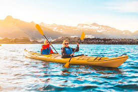
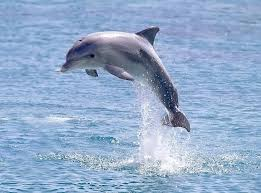
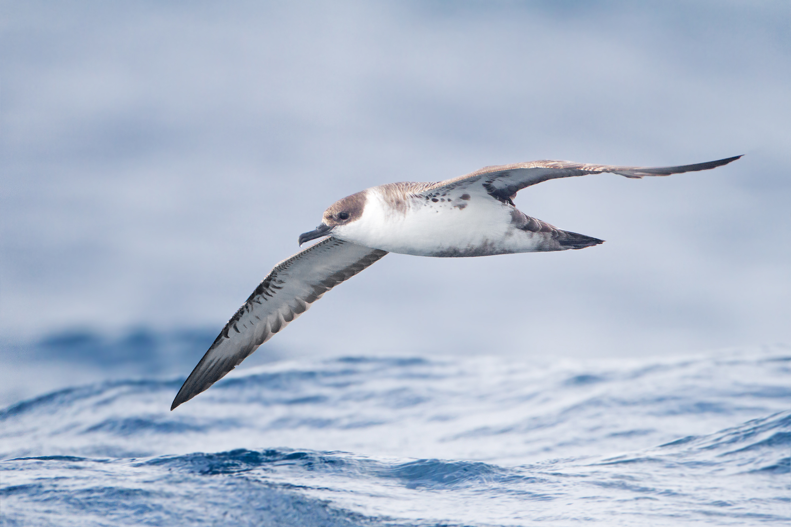

Sport3: KAYAKING
Kayaking: Kayaking allows visitors to experience Lakshadweep's natural beauty from a unique perspective.
Paddling through the archipelago's tranquil lagoons, participants can admire the pristine coastlines, mangrove forests,
and secluded beaches that dot the islands.
With kayak rentals available at various resorts and adventure centers, kayakers can embark on self-guided explorations
or join guided tours led by knowledgeable local guides. As they glide through the serene waters, kayakers may spot a
variety of marine life, including sea birds, rays, and perhaps even playful dolphins swimming nearby. Whether leisurely paddling
or embarking on a multi-day expedition, kayaking offers a peaceful and eco-friendly way to connect with Lakshadweep's natural wonders.


